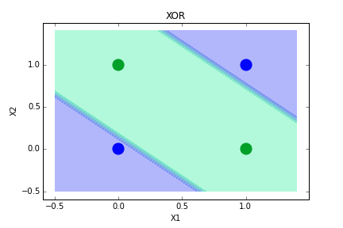

I've been building an e-mail classifier for Code Club Brasil with a multilabel approach, the idea is to build an automated email responder. A professor from IME-USP helps me with advices when we meet to discuss the problem, it may become my graduation thesis. It's been nice to face a ML in such holistic way, since i've collected and labeled the data and i need to both discover the questions and answer them. I'm dealing with a lot of issues, as a small dataset and skewed labels. There's a long list of things to try, but the best until now is a 51% Global Acc. The Notebook with my first experiments can be seen here.
My Kaggle Profile.
DataScienceGame 2016's selection: An image classification competition between teams from universities runned in Kaggle. Result: 38th in 117 teams. Though we haven't classified to the second phase, it was a great learning oportunity. My notebook can be seen here.
Kaggle's San Francisco Crime Classification: A classic multi-class problem. My first competition in Kaggle. Result: 198th in 2335 teams. Finished almost 2 months ago, but no private leaderboard yet. Here one notebook i used notebook, though some grid search and xgboost were done in different files.
My very first hackaton, i wasn't using Pandas neither Jupyter Notebook. Though it's nice to implement from scratch, i'm happy i'm now using Pandas and not writing OHE functions to Numpy Arrays. Result: 6-10th in 120 competitors. Here's the code.
Some basic ML Models built from scratch, i tried to follow scikit-learn methods names.
Linear Regression using Least Mean Squares, plots from weights evolution, learning curves and fitted model: notebook.
The Perceptron, plots with classes and the learned boundary line: notebook.
Multi Layer Perceptron solving the XOR problem: notebook.
Nice series of courses. We use numpy in the low level assignments (implementing algorithms) and graphlab, a ml library from Turi (former Dato), in the high level ones. They give us a skeleton, so the code isn't entirely written by me. I'm doing the course 4 now.
Only the two first courses from the specialization. It was a good oportunity to review hypothesis tests and uso scipy.stats. The assignments are here.
There're other courses that are related with Machine Learning, Data Science and Python, they're listed in my cv.
{kind=link}
{kind=link}